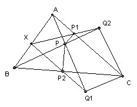
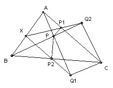

a1 - a2 + a3 - ... + an,
a2 - a3 + a4 - ... - an + a1,
a3 - a4 + ... + an - a1 + a2,
...
an - a1 + a2 - ... + an-1
are all positive.

|
1. ABC is a triangle and P an interior point. Let the feet of the perpendiculars from P to AC, BC be P1, P2 respectively, and let the feet of the perpendiculars from C to AP, BP be Q1, Q2 respectively. Show that P1Q2 and P2Q1 meet on the line AB.
 |
|
|
2. ABC is an acute-angled triangle. M is the midpoint of BC and P is the point on AM such that MB = MP. H is the foot of the perpendicular from P to BC. The lines through H perpendicular to PB, PC meet AB, AC respectively at Q, R. Show that BC is tangent to the circle through Q, H, R at H.
|
|
|
3. If S is a point on the circumcircle of the triangle PQR, show that the feet of the perpendiculars from S to the lines PQ, QR, RP are collinear. Denote the line by [S, PQR]. If ABCDEF is a hexagon whose vertices lie on a circle, show that the lines [A, BDF], [B, ACE], [D, ABF], [E, ABC] are concurrent iff CDEF is a rectangle.
|
|
|
5. ABC is a triangle with ∠A = 60o and incenter I. P lies on BC with 3 BP = BC. The point F lies on AB and IF is parallel to AC. Show that ∠BFP = ∠FBI.
|
|
| 7. O is the circumcenter of the tetrahedron ABCD. The midpoints of BC, CA, AB are L, M, N respectively. AB + BC = AD + CD, CB + CA = BD + AD and CA + AB = CD + BD. Show that ∠LOM = ∠MON = ∠NOL. |
|
| 8. Given a set A of n points in the plane, no three collinear, show that we can find a set B of 2n - 5 points such that a point of B lies in the interior of every triangle whose vertices belong to A. |
|
| 9. A graph has 1991 points and every point has degree at least 1593. Show that there are six points, each of which is joined to the others. Is 1593 the best possible? |
|
| 11. Let mCn represent the binomial coefficient m!/(n! (m-n)! ). Prove that (1991C0)/1991 - (1990C1)/1990 + (1989C2)/1989 - (1988C3)/1988 + ... - (996C995)/996 = 1/1991. | |
| 13. No term of the sequence a1, a2, ... , an is divisible by n and the sum of all n terms is not divisible by n. Show that for n > 1 there are at least n different subsequences whose sum is divisible by n. | |
| 14. The quadratic ax2 + bx + c has integer coefficients. For some prime p its values are squares for 2p-1 consecutive integers x. Show that p divides b2 - 4ac. | |
| 15. Let an be the last non-zero digit of n! Does the sequence an become periodic after a finite number of terms? | |
| 17. Find all positive integer solutions to 3m + 4n = 5k. |
|
| 18. What is the largest power of 1991 which divides 1990m + 1992n, where m = 19911992 and n = 19911990? |
|
| 19. Show that the only rational solution q in the range 0 < q < 1 to the equation cos(3πq) + 2 cos(2πq) = 0 is 2/3. |
|
| 20. Let k be the positive root of the equation x2 = 1991 x + 1. For positive integers m, n define m # n = mn + [km] [kn]. Show that the operation # is associative. |
|
| 21. The polynomial p(x) = x1991 + a1990x1990 + ... + a0 has integer coefficients. Show that the equation p(x)2 = 9 has at most 1995 distinct integer solutions. |
|
| 22. There is exactly one square with its vertices on the curve y = x3 + ax2 + bx + c, where a, b, c are real. Show that the square must have side 721/4. |
|
| 23. f(n) is an integer-valued function defined on the integers which satisfies f(m + f( f(n) ) ) = - f( f(m+1)) - n for all m, n. The polynomial g(n) has integer coefficients and g(n) = g( f(n) ) for all n. Find f(1991) and the most general form for g. |
|
|
24. Find all odd integers n > 1 for which there is at least one permutation a1, a2, ... , an of 1, 2, 3, ... , n such that the sums
a1 - a2 + a3 - ... + an, a2 - a3 + a4 - ... - an + a1, a3 - a4 + ... + an - a1 + a2, ... an - a1 + a2 - ... + an-1 are all positive. |
|
| 25. Given n > 1 real numbers 0 ≤ xi ≤ 1, show that for some i < n we have xi(1 - xi+1) ≥ x1(1 - xn)/4. |
|
| 26. a1, a2, ... , an and b1, b2, ... , bn are non-negative reals such that a1 + a2 + ... + an = b1 + b2 + ... + bn = 1. Let pi be the product a1a2 ... ai-1biai+1 ... an. If none of the bi exceed k, where ½ ≤ k ≤ 1, show that p1 + p2 + ... + pn ≤ k/(n - 1)n-1 | |
| 27. Find the maximum possible value of x1x2(x1 + x2) + x1x3(x1 + x3) x1x2(x1 + x2) + x1x4(x1 + x4) + ... + x1xn(x1 + xn) for non-negative real numbers x1, x2, ... , xn with sum 1. | |
| 29. Find all subsets X of the real line such that for any stretch S there is a translation T such that S(X) = T(X). A stretch is a transformation x → h + k(x - h), where h and k ≠ 0 are constants, and a translation is a transformation x → x + t, where t is a constant. | |
| 30. Two people A and B and an umpire U play the following game. A chooses an arbitrary positive integer m, and B chooses an arbitrary positive integer n. Each gives his integer to U but not to the other player. U then writes two integers on a blackboard, one of which is m + n. U asks A if he knows n. If he does not, then U asks B if he knows m. If he does not, then U asks A if he knows n, and so on. Show that one player will be able to deduce the other's number after a finite number of questions. |
|
| Note: problems 4, 6, 10, 12, 16, and 28 were used in the Olympiad and are not shown here. |

Shortlist home
© John Scholes
jscholes@kalva.demon.co.uk
21 Dec 2002
Last corrected/updated 3 Jan 03